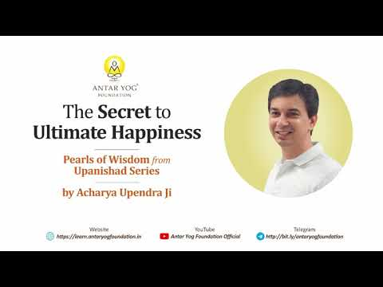

ज्ञान पाप से क्यों नहीं बचाता?
ज्ञान आपको पाप करने से कभी नहीं रोक सकता। फिर भी शास्त्र कहते हैं: ज्ञानी को मोक्ष।
तो क्या दोनों बातें सच हैं? हाँ। बस हमें यह समझना है कि कौन सा ज्ञान मुक्ति देता है और कौन सा ज्ञान अटकाता है।
किताबी ज्ञान, अपने आप जुटाया हुआ ज्ञान, या किसी निषिद्ध गुरु से मिला ज्ञान, अगर सिद्ध नहीं है, तो पतन की ओर ले जाता है। मुक्त करने वाला ज्ञान आत्मज्ञानी, ब्रह्मनिष्ठ (ब्रह्म में स्थित) और श्रोत्रिय (शास्त्र में पारंगत) गुरु से आता है। जैसे कृष्ण ने अर्जुन से कहा था कि केवल तू देख सकता है, वैसे ही शक्तिपात दीक्षा (गुरु द्वारा चेतना का सीधा संचार) पाने वाले को ही वास्तविक ज्ञान आता है। बाकी सबका ज्ञान पाप और जन्म, दोनों बढ़ाता है।
आप शरीर, मन, बुद्धि नहीं हो
शरीर, मन और बुद्धि आपके उपकरण हैं, आप नहीं। संस्कृत में इन्हें करण (साधन) कहते हैं।
हर उपकरण का अपना विषय है:
- शरीर के लिए: पंच महाभूत, यह सारा दिखने और अनुभव होने वाला विश्व
- मन के लिए: भावनाएँ
- बुद्धि के लिए: विचार
जहाँ साधन हैं, वहाँ एक कर्ता भी लगता है। शरीर से मैं ग्रहण करने वाला बनता हूँ, मन से अनुभव करने वाला, बुद्धि से विचारक।
प्रकृतेः क्रियमाणानि गुणैः कर्माणि सर्वशः।
अहङ्कारविमूढात्मा कर्ताहमिति मन्यते॥
"सारे कर्म प्रकृति के द्वारा होते हैं, तू तो साक्षी है।"
(श्रीमद्भगवद्गीता ३.२७)
जो सोचता है "मैं करता हूँ", वह अहंकार से मोहित है। गीता के अनुसार यह कर्ता-भाव ही अहंकार है।
अच्छा मैंने किया, बुरा किसी और ने
ज़रा अपने आप को देखिए। रास्ता ठीक से पार किया, मैंने किया। किसी को बचाया, मैंने बचाया। डॉक्टर ने प्राण बचाए, न्यायाधीश ने न्याय दिया, किसी का कर्ज़ चुकाया: हर बार "मैंने"।
और जब दुर्घटना हुई? तब परमात्मा ने की। डेंगू हुआ? नगरपालिका ने अपना काम नहीं किया।
आचार्य जी पूछते हैं कि हर व्यक्ति यही बोलता है कि शुभ काम मैंने किया, तो फिर अशुभ काम कर कौन रहा है?
कोई शक्ति तो है जो अच्छे-बुरे सब कर्म करती है। यह आरंभिक अवस्था है। आगे समझ आती है कि कर्ता-करयिता मैं ही हूँ, पर शरीर वाला "मैं" नहीं, आत्मतत्त्व वाला "मैं"।
आज आपने कौन सा अच्छा काम "मैंने किया" कहकर अपने नाम लिखा, और कौन सी परेशानी किसी और के नाम?
ज़्यादा पढ़ने से अहंकार क्यों बढ़ता है
मनुष्य सोचता है कि बुद्धि बढ़ाऊँ तो समस्याएँ चली जाएँगी। तो वह आध्यात्मिक प्रवचन, पाठ्यक्रम, किताबें, चलचित्र, सब इकट्ठा करता है।
नतीजा? बुद्धि बड़ी होती है, और उसके साथ "मैं" भी बहुत बड़ा हो जाता है। सत्संग में आकर, कोर्स करके, किताब पढ़कर पाप नहीं रुकता। अगर सिर्फ सुनने आए हो, तो बारह-सोलह जन्म और बढ़ सकते हैं।
यह मेरा वाक्य नहीं, कृष्ण का वाक्य है: ज्ञान पाप से नहीं रोकता, जन्म पर जन्म बढ़ाता है; फिर भी ज्ञानी को मोक्ष। ऐसे विरोधाभास समझने के लिए ही वेदांत सीखा जाता है।
मनुष्य को सबसे अधिक बुद्धि मोक्ष की ओर जाने के लिए मिली है। पर बुद्धि का स्वभाव है अहंकार बढ़ाना। जितना पढ़ोगे, उतना "मैं ग्रहण करने वाला, मैं अनुभव करने वाला, मैं विचारक" बढ़ेगा, और दूसरों को नीचा दिखाने की कोशिश भी।
वासना: असली बॉस
इसका कारण है वासना। आपकी पत्रिका, आपके संस्कार, विशेषकर जो नकारात्मक संस्कार बच गए, वही वासना है।
वासना कोई बुरा शब्द नहीं। इसका अर्थ है प्रवृत्ति (tendency):
- खाने की वासना: खाने की प्रवृत्ति
- काम वासना: संभोग की प्रवृत्ति
- लोक वासना: प्रसिद्धि की प्रवृत्ति
- देह वासना: शरीर को परिपूर्ण, सुगठित रखने की प्रवृत्ति
समस्या यह है कि वासना शरीर, मन और बुद्धि, तीनों की बॉस है। बुद्धि ने कितनी भी पढ़ाई कर ली, वह वासना के अनुसार ही चलेगी। और वासना कहती है: मैं पुनर्जन्म पर पुनर्जन्म कराऊँगी।
बीच में बैठी छन्नी
सबसे ऊपर ॐ है, परमात्मा। उसे अल्लाह कहो, ईसा कहो, बुद्ध कहो; हम उसे ओंकार कहते हैं। उसी से शक्ति आती है।
पर आपने बीच में एक छन्नी लगा रखी है: वासना की, पसंद-नापसंद की, राग-द्वेष (आसक्ति और विरोध) की। गुरु कुछ कहता है और आप तुरंत कहते हो, "ऐसा नहीं हो सकता।" वही आपकी वासना बोल रही है।
क्रम ऐसा है: शरीर का बॉस मन, मन की बुद्धि, तीनों की वासना, और वासना का बॉस ओंकार। वासना बीच के मैनेजर जैसी है, जो ऊपर का आदेश लेती है पर नीचे ठीक से नहीं पहुँचाती।
आचार्य जी बताते हैं कि वासना के कारण हमारा ज्ञान भी विकृत होता है। इसलिए पत्नी में देवी नहीं, राक्षसी दिखती है; पति में शिव नहीं, कोई राक्षस दिखता है।
जब कोई सही बात आपको तुरंत "नहीं" कहने पर मजबूर करती है, तो वह "नहीं" आपकी बुद्धि का है या आपकी वासना का?
जीवात्मा: भटकता हुआ जीव
मन और आत्मा मिलकर जीवात्मा है। भूत-प्रेत और भ्रांत चित्त वाले सामान्य मनुष्य में बस इतना अंतर है कि एक के पास शरीर है, दूसरे के पास नहीं। दोनों भटक रहे हैं।
कोई शराब के अड्डे के बाहर भटक रहा है, कोई न्यायालय के बाहर, और कोई शास्त्रों के लिए पुस्तकालय के बाहर।
सद्गुरु: जिसकी वासना कट चुकी है
मुक्ति का रास्ता उस व्यक्ति से खुलता है जिसने मन को जीत लिया: सद्गुरु।
भावातीतं त्रिगुणरहितं सद्गुरुं तं नमामि॥
"जो भावनाओं से परे है, तीनों गुणों से रहित है, उस सद्गुरु को नमन।"
(गुरु स्तोत्र)
भावनाएँ गईं तो अनुभव करने वाला "मैं" गया। वासना कटी तो अहंकार गया, और "मैं करता हूँ" का भाव भी।
उसका शरीर, बुद्धि, विचार और बाहर का विश्व अब भी हैं। पर अब बीच में छन्नी नहीं है। ओंकार की परा वाणी (परमात्मा से सीधे आने वाली वाणी) सीधे उसकी बुद्धि में आती है। वह उसे मुख से, इशारों से, शरीर से व्यक्त करता है। यही गुरुवाणी है।
किस ज्ञानी को मोक्ष मिलता है
आचार्य जी कहते हैं कि गुरुवाणी को सीधे बुद्धि में लेना है, मन को बिना छुए, बिना सवाल किए, और चुपचाप शरीर से कृत्य कर देना है।
ऐसा करने वाला शरणागत शिष्य (पूर्ण समर्पित शिष्य) है। जिसे इतना ज्ञान आ गया, उसी के लिए कहा गया: ज्ञानी को मोक्ष।
ओंकार आपके लिए भी है, आप भी ब्रह्म हो। पर आपकी वासना संदेश को बिगाड़ देती है। गुरु कहता है: हम दोनों का बॉस एक ही है, पर मेरी वासना वाली कड़ी कट चुकी है, इसलिए संदेश सीधा मुझ तक आता है और मैं सीधा तुम तक पहुँचाऊँगा।
इसलिए जो गुरु के उपाय को चुपचाप, बिना प्रश्न किए सुनता है, उसी को लाभ होता है। और इसके अलावा कोई तरीका नहीं है।
क्या आप किसी बात को बिना अपनी पसंद-नापसंद की छन्नी लगाए सुन सकते हैं?
मुख्य बातें
- शरीर, मन और बुद्धि आपके उपकरण हैं; "मैं करता हूँ" का भाव ही अहंकार है।
- किताबी और स्वयं जुटाया ज्ञान पाप से नहीं रोकता, बल्कि अहंकार और जन्म बढ़ाता है।
- वासना, अर्थात संस्कारों से बनी प्रवृत्ति, शरीर, मन और बुद्धि तीनों की बॉस है और ज्ञान को विकृत करती है।
- सद्गुरु वासना और भावनाओं से परे है; उसकी बुद्धि में परमात्मा की परा वाणी सीधे आती है।
- मोक्ष उस शिष्य को मिलता है जो राग-द्वेष से ऊपर उठकर गुरुवाणी को बिना प्रश्न किए जीवन में उतारता है।
